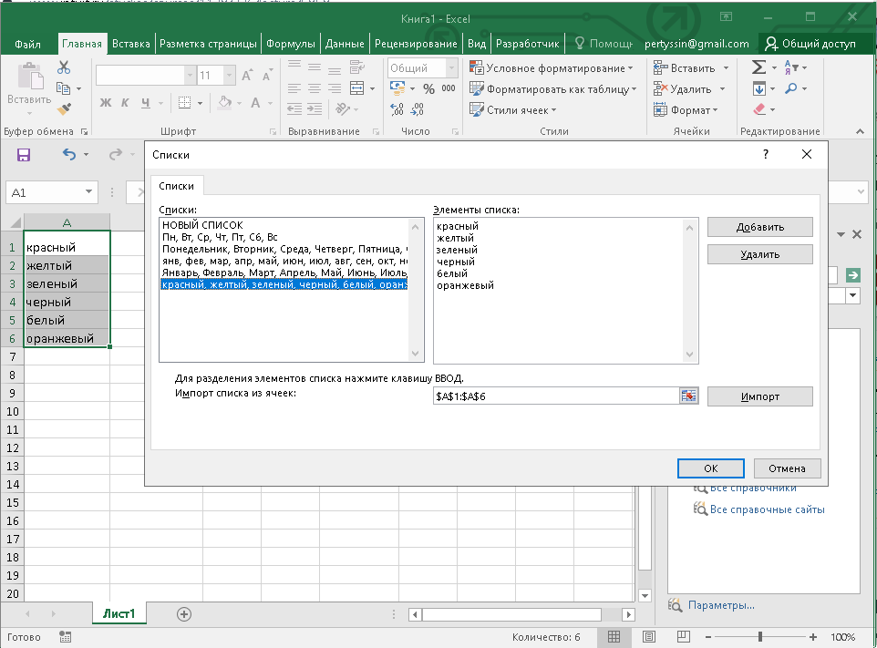

Данные можно вводить непосредственно в ячейку или в строку формул.
1. Выделите ячейку.
2. Введите данные с клавиатуры непосредственно в ячейку или в строку формул.
3. Подтвердитье ввод. Подтвердить ввод можно одним из трех способов: нажать клавишу Enter или Tab ; нажать кнопку Ввод (галочка) в строке формул (рис. 4.1); выделить любую другую ячейку на листе (нельзя использовать при вводе формул).
Рис. 4.1. Ввод данных с клавиатуры
При вводе неправильного символа его можно удалить. Для удаления символа слева от текстового курсора надо нажать клавишу BackSpace.
При вводе данных переводить текстовый курсор в ячейке клавишами клавиатуры нельзя. Это можно сделать только с использованием мыши. Необходимо навести указатель мыши и один раз щелкнуть левой кнопкой мыши.
По умолчанию все данные в ячейке вводятся одной строкой. Для перехода к новой строке (новому абзацу) в ячейке необходимо нажать клавишу Enter при нажатой клавише Alt (рис. 4.2).
Рис. 4.2. Ввод данных в ячейку в две строки
Также текст в несколько строк в ячейке можно будет расположить при оформлении ячейки.
Для отказа от ввода данных в ячейку следует нажать клавишу Esc или кнопку Отмена (крестик) в строке формул (см. рис. 4.1).
В ячейке может находиться до 32767 символов. Исключение составляют формулы. Длина записи для формулы – 8192 символа.
Одни и те же данные можно ввести одновременно в несколько различных ячеек одного листа. Для этого следует выделить ячейки, в которые необходимо ввести данные (не обязательно смежные), ввести данные и нажать клавиши Ctrl + Enter или, при нажатой клавише Ctrl, щелкнуть по кнопке Ввод в строке формул (см. рис. 4.1).
Одни и те же данные можно ввести одновременно в одноименные ячейки различных листов. Для этого следует выделить ярлыки листов, в которые необходимо ввести данные, ввести данные и подтвердить ввод.
Microsoft Excel обычно распознает вводимые в ячейку данные (текст, числа, даты, время) и автоматически устанавливает соответствующий формат данных.
Если весь текст ячейки не помещается по ширине столбца, а ячейки справа не содержат данных, то текст отображается на листе на соседних ячейках справа (ячейка А1 на рис. 4.3). Если же ячейки справа содержат какие-либо данные, то весь текст на листе не отображается (ячейка А2 на рис. 4.3). При этом текст в строке формул отображается полностью.
Рис. 4.3. Отображение текста в ячейках
При вводе текста нельзя расставлять переносы в словах с использованием клавиши дефис ( - ). Это может затруднить последующую работу с данными (сортировки, выборки и т. п.).
При вводе текстовых данных в непрерывный ряд ячеек одного столбца можно воспользоваться автозавершением.
Если несколько первых символов, вводимых в ячейку, совпадают с символами записи, ранее введенной в этом столбце, то эта запись при вводе отображается в ячейке (рис. 4.4) и недостающая часть записи может быть введена автоматически. Для этого достаточно нажать клавишу Enter. Если же необходимо ввести другую информацию, то следует продолжать ввод данных. Автоматический ввод производится только для записей, которые содержат текст или текст в сочетании с числами. Записи, полностью состоящие из чисел, дат или времени, необходимо вводить самостоятельно.
Рис. 4.4. Автозавершение ввода данных
Для ввода данных, уже имеющихся в ячейках данного столбца, можно выделить ячейку и нажать комбинацию клавиш Alt + \downarrow или щелкнуть по ячейке правой кнопкой мыши и выбрать команду контекстного меню Выбрать из раскрывающегося списка. В результате в ячейке откроется своеобразный раскрывающийся список (рис. 4.5), в котором отображены записи, уже имеющиеся в столбце. Необходимую для ввода запись можно выбрать щелчком мыши или перевести выделение клавишами клавиатуры и нажать клавишу Enter.
Рис. 4.5. Выбор записи из списка
Следует отметить, что и автозавершение и выбор из списка эффективно работают только при условии, что данные в ячейках столбца составляют непрерывный ряд, а заполняемая ячейка находится непосредственно под ними. Если в ряде данных есть пустые ячейки, то будут использоваться только записи, расположенные ниже последней пустой ячейки.
Если заполняемая ячейка находится ниже любой пустой ячейки, то воспользоваться возможностью автозавершения не удастся.
При первоначальном вводе числа (до изменения ширины столбцов) в ячейку может отобразиться число из 11 цифр. При этом ширина столбца может автоматически увеличиться (ячейка А1 на рис. 4.6). При вводе большего числа число будет отображено в экспоненциальном формате (ячейка В1 на рис. 4.6).
Если же ширина столбца была уменьшена и число не помещается в ячейке, то вместо числа в ячейке отображаются символы # (ячейка С1 на рис. 4.6). При этом число можно увидеть в строке формул или в виде всплывающей подсказки при наведении указателя мыши на ячейку. В ячейке число может быть отображено при увеличении ширины столбца или при уменьшении размера шрифта.
Рис. 4.6. Отображение чисел в ячейке
Наибольшее число, которое можно ввести в ячейку составляет 9,99999999999999*10307. Точность представления чисел – 15 разрядов (значащих цифр).
При вводе с клавиатуры десятичные дроби от целой части числа отделяют запятой.
Можно вводить числа с простыми дробями. При вводе с клавиатуры простую дробь от целой части числа отделяют пробелом. В строке формул простая дробь отображается как десятичная (рис. 4.7).
Рис. 4.7. Отображение простой дроби на листе и в строке формул
Для удобства представления больших чисел группы разрядов при вводе можно отделять пробелами. Например, число 12345678 можно ввести как 12 345 678. В строке формул при этом число будет отображаться без пробелов между разрядами (рис. 4.8).
Рис. 4.8. Ввод чисел с разделителем разрядов
Группы разрядов числа (за исключением первой группы) должны обязательно включать три знака. В противном случае данные в ячейке не будут восприниматься как число. Формат с разделителем разрядов запоминается в ячейке. После очистки содержимого ячейки и ввода новой числовой информации (включая даты и время) к ней автоматически будет применяться установленный числовой формат. Для возможности ввода другой числовой информации необходимо очистить формат ячейки.
В большинстве случаев следует вводить числа без указания размерности. В противном случае такая информация не воспринимается как число. Исключение составляет обозначение рубля (следует вводить число, а затем букву р с точкой), а также процентов (следует вводить число, а затем символ процента % ). Обозначение рубля и процентов запоминается в ячейке. После очистки содержимого ячейки и ввода другого числа, к нему автоматически будет применяться установленное обозначение. Для возможности ввода другой числовой информации необходимо очистить формат ячейки.
В отдельных случаях необходимо вводить числа, которые, по сути, являются текстом и не должны распознаваться как числа. Это могут быть, например, номера банковских счетов, номера телефонов, коды и артикулы, почтовые индексы, номера домов и квартир и т. п. Для того чтобы Microsoft Excel автоматически назначал таким числам текстовый формат, перед числом необходимо ввести знак апострофа ('). Этот знак отображается только в строке формул, но не отображается в ячейке (рис. 4.9). Такая ячейка будет помечена в левом верхнем углу зеленым треугольником. При выделении такой ячейки слева может появляться кнопка
Источник ошибки. Если ввод апострофа перед числом произведен специально, то следует щелкнуть по кнопке и выбрать команду Пропустить ошибку. Если апостроф перед числом введен ошибочно, то следует щелкнуть по кнопке и выбрать команду Преобразовать в число.
Рис. 4.9. Число, введенное как текст
Например, только таким образом в ячейку можно ввести двадцатизначный номер счета. При вводе номера как обычного числа он будет округлен до 15 значащих цифр и преобразован в экспоненциальный формат.
Microsoft Excel воспринимает даты начиная с 1 января 1900 года. Даты до 1 января 1900 года воспринимаются как текст. Наибольшая возможная дата – 31 декабря 9999 года.
Произвольную дату следует вводить в таком порядке: число месяца, месяц, год. В качестве разделителей можно использовать точку ( .), дефис ( - ), дробь ( / ). При этом все данные вводятся в числовом виде. Точка в конце не ставится. Например, для ввода даты 12 августа 1918 года с клавиатуры в ячейку следует ввести:
12.8.1918 или 12-8-1918 или 12/8/1918.
При вводе года можно ограничиться двумя цифрами, если речь идет о датах с 1 января 1930 года по 31 декабря 2029 года. Например, для ввода даты 12 апреля 1961 года с клавиатуры в ячейку достаточно ввести:
12.4.61 или 12-4-61 или 12/4/61.
Для дат текущего десятилетия год можно указывать одной цифрой. Например, для ввода даты 2 ноября 2002 года с клавиатуры в ячейку достаточно ввести:
2.11.2 или 2-11-2 или 2/11/2
Независимо от способа ввода, первоначально дата в ячейке отображается в полном формате (ячейки А1:А3 на рис. 4.10).
При вводе даты текущего года можно ограничиться вводом только числа месяца и месяца с использованием тех же разделителей. Например, для ввода даты 2 ноября сего года с клавиатуры в ячейку достаточно ввести:
2.11 или 2-11 или 2/11.
Но тогда и дата в ячейке первоначально будет отображена в кратком формате (ячейки В1:В3 на рис. 4.10).
Рис. 4.10. Отображение дат при вводе
Текущую дату можно ввести комбинацией клавиш Ctrl + Shift + ;.
Независимо от способа ввода и последующего форматирования дата в строке формул всегда отображается в полном формате: ДД.ММ.ГГГГ.
Время следует вводить в таком порядке: час, минуты, секунды. Впрочем, секунды вводить не обязательно. В качестве разделителей следует использовать двоеточие ( :). Точка в конце не ставится. Например, для ввода времени 14 часов 12 минут 00 секунд в ячейку достаточно ввести: 14:12.
Для отображения времени суток в 12-часовом формате следует ввести букву a или p (обязательно в английской раскладке клавиатуры), отделенную пробелом от значения времени, например 9:00 p. После ввода время будет отображено с обозначением РМ (рис. 4.11).
Рис. 4.11. Отображение времени при вводе
Чтобы ввести текущее время, можно нажать комбинацию клавиш CTRL + SHIFT + :.
Ячейка может содержать одновременно дату и время. Для этого необходимо ввести дату, ввести пробел, а затем ввести время. Можно вводить и в обратной последовательности: сначала время, а потом дату, но пробел должен быть обязательно.
Формат даты (времени) запоминается в ячейке. После очистки содержимого ячейки и ввода другой числовой информации, она автоматически будет приобретать вид даты (времени). Для возможности ввода другой числовой информации необходимо очистить формат ячейки.
Автозаполнение можно использовать для ввода в смежные ячейки одного столбца или одной строки последовательных рядов календарных данных (даты, дни недели, месяцы), времени, чисел, комбинаций текста и чисел. Кроме того, можно создать собственный список автозаполнения.
1. В первую из заполняемых ячеек введите начальное значение ряда.
2. Выделите ячейку.
3. Наведите указатель мыши на маркер автозаполнения (маленький черный квадрат в правом нижнем углу выделенной ячейки). Указатель мыши при наведении на маркер принимает вид черного креста.
4. При нажатой левой кнопке мыши перетащите маркер автозаполнения в сторону изменения значений. При перетаскивании вправо или вниз значения будут увеличиваться (рис. 4.12 – рис. 4.13), при перетаскивании влево или вверх – уменьшаться.
Рис. 4.12. Автозаполнение по столбцу с возрастанием
Рис. 4.13. Автозаполнение по строке с возрастанием
По окончании перетаскивания рядом с правым нижним углом заполненной области появляется кнопка Параметры автозаполнения (рис. 4.14).
Рис. 4.14. Результат автозаполнения
При автозаполнении числовыми данными первоначально будут отображены одни и те же числа. Для заполнения последовательным рядом чисел необходимо щелкнуть левой кнопкой мыши по кнопке Параметры автозаполнения (см. рис. 4.14) и выбрать команду Заполнить (рис. 4.15).
Рис. 4.15. Меню автозаполнения при работе с числами
Автозаполнение последовательным рядом чисел можно также получить, если маркер автозаполнения перетаскивать при нажатой клавише Ctrl.
Для выбора способа заполнения календарными рядами после перетаскивания необходимо щелкнуть левой кнопкой мыши по кнопке Параметры автозаполнения (см. рис. 4.14) и выбрать требуемый режим автозаполнения. В меню ряда календарных значений (рис. 4.16) можно выбрать следующие варианты заполнения:
Заполнить по рабочим дням – только рабочие дни без учета праздников;
Заполнить по месяцам – одно и то же число последовательного ряда месяцев;
Заполнить по годам – одно и то же число одного и того же месяца последовательного ряда лет.
Рис. 4.16. Меню автозаполнения при работе с датами
Список примеров некоторых данных, для которых можно использовать автозаполнение, приведен в таблице
| Начальное значение | .Последующие значения | ||||
| 1 | .2 | 3 | 4 | 5 | 6 |
| 01.01.2004 | .02.01.2004 | 03.01.2004 | 04.01.2004 | 05.01.2004 | 06.01.2004 |
| 01.янв | .02.янв | 03.янв | 04.янв | 05.янв | 06.янв |
| Понедельник | .Вторник | Среда | Четверг | Пятница | Суббота |
| Пн | .Вт | Ср | Чт | Пт | Сб |
| Январь | .Февраль | Март | Апрель | Май | Июнь |
| Янв | .Фев | Мар | Апр | Май | Июн |
| 1 кв | .2 кв | 3 кв | 4 кв | 1 кв | 2 кв |
| 1 квартал | .2 квартал | 3 квартал | 4 квартал | 1 квартал | 2 квартал |
| 1 кв 2004 | .2 кв 2004 | 3 кв 2004 | 4 кв 2004 | 1 кв 2005 | 2 кв 2005 |
| 1 квартал 2004 | .2 квартал 2004 | 3 квартал 2004 | 4 квартал 2004 | 1 квартал 2005 | 2 квартал 2005 |
| 2004 г | .2005 г | 2006 г | 2007 г | 2008 г | 2009 г |
| 1 2004 год | .2 2005 год | 3 2006 год | 4 2007 год | 5 2008 год | 6 2009 год |
| 8:00 | .9:00 | 10:00 | 11:00 | 12:00 | 13:00 |
| Участок 1 | .Участок 2 | Участок 3 | Участок 4 | Участок 5 | Участок 6 |
| 1 стол | .2 стол | 3 стол | 4 стол | 5 стол | 6 стол |
| 1-й раунд | .2-й раунд | 3-й раунд | 4-й раунд | 5-й раунд | 6-й раунд |
Во всех этих случаях автозаполнение происходит рядом данных со стандартным шагом. При необходимости заполнения рядом данных с произвольным шагом необходимо в две смежные ячейки ввести два первых значения, затем выделить обе ячейки и перетащить маркер автозаполнения (рис. 4.17) при нажатой левой кнопке мыши.
Рис. 4.17. Автозаполнение с произвольным шагом
Для удобства работы можно создать собственный список автозаполнения.
1. Введите список в смежные ячейки одного столбца или одной строки
2. Выделите ячейки со списком.
3. Щелкните Файл, а затем выберите команду Параметры Excel.
4. В окне Параметры Excel выберите Дополнительно. Нажмите кнопку Изменить списки.
5. В окне Списки убедитесь, что ссылка на ячейки в выделенном списке элементов отображается в поле Импорт списка из ячеек, и нажмите кнопку Импорт (рис. 4.18). Элементы выделенного списка будут добавлены в поле Списки, а его элементы будут отображаться в поле Элементы списка.
6. В окне Списки нажмите кнопку ОК.
7. В окне Параметры Excel нажмите кнопку ОК.

Рис. 4.18. Создание списка автозаполнения
Для удаления созданного списка следует в окне Списки в поле Списки выделить ненужный список и нажать кнопку Удалить.
Для замены содержимого ячейки достаточно выделить ее, ввести новые данные и подтвердить ввод.
Следует иметь в виду, что при вводе некоторых типов числовых данных (даты, время, числа с разделителями разрядов, проценты и др.) автоматически устанавливается формат данных в ячейке. Ввод новых числовых данных вместо существовавших может привести к их неправильному отображению. Так, если в ячейке была ранее введена дата, то после ввода обычного числа Microsoft Excel преобразует его в дату. Например, число 178 будет отображено как дата 26.06.1900. В этом случае следует очистить формат ячейки.
Содержимое ячейки можно редактировать непосредственно в ячейке или в строке формул.
При правке содержимого непосредственно в ячейке необходимо щелкнуть по ней два раза левой кнопкой мыши так, чтобы текстовый курсор начал мигать в ячейке, или выделить ячейку и нажать клавишу F2. После этого произвести необходимое редактирование и подтвердить ввод данных.
При правке содержимого ячейки в строке формул необходимо щелкнуть в строке формул левой кнопкой мыши так, чтобы в ней начал мигать текстовый курсор. После этого произвести необходимое редактирование и подтвердить ввод данных.
Для удаления символа, стоящего справа от текстового курсора, следует нажать клавишу Delete, для удаления символа, стоящего слева от текстового курсора, – клавишу BackSpace. Для удобства работы в режиме редактирования ячейки можно выделять фрагменты текста. Для выделения одного слова достаточно дважды щелкнуть по нему левой кнопкой мыши. Для выделения произвольного фрагмента следует провести по нему указателем мыши при нажатой левой кнопке мыши. Кроме того, фрагменты текста ячеек можно выделять перемещением курсора клавишами клавиатуры при нажатой клавише Shift.
Microsoft Excel позволяет проверять орфографию текста, введенного в ячейки, а также надписей на листе. Грамматическая и стилистическая проверка не производится. Орфографию можно проверять на всем листе или в выделенной области листа, например, только в некоторых столбцах или строках.
1. Во вкладке Рецензирование в группе Правописание нажмите кнопку Орфография
2.При обнаружении орфографической ошибки появится диалоговое окно Орфография. В заголовке окна будет указан также язык проверки (рис. 4.19).
Рис. 4.19. Выявленная орфографическая ошибка
3. В верхней части диалогового окна Орфография отображено ошибочное слово. В нижней части окна могут быть приведены правильные варианты написания слова (см. рис. 4.19).
4. Для исправления ошибки нужно выбрать правильный вариант написания и нажать кнопку Заменить или Заменить все (см. рис. 4.19).
5. Если в нижней части окна нет правильных вариантов написания слова, то ошибку следует исправлять самостоятельно. Это можно сделать в верхней части окна, после чего, в зависимости от вида ошибки, необходимо нажать кнопку Заменить или Заменить все.
Слово в документе может быть написано правильно, но оно отсутствует в словарях. Во избежание дальнейшего определения его как ошибочного, слово следует добавить во вспомогательный словарь. Для добавления слова в словарь нажмите кнопку Добавить (см. рис. 4.19).